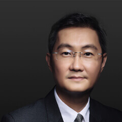
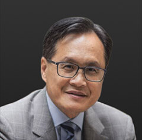

| 姓名 | 职位 | 简介 | 照片 |
|---|---|---|---|
| 马化腾 | 主要创办人董事会主席兼首席执行官 |
腾讯主要创办人之一，董事会主席兼首席执行官，全面负责公司战略规划、定位和管理。在1998年创立腾讯前，马化腾曾在深圳润迅通讯发展有限公司工作，主管互联网传呼系统的研究开发。 马化腾毕业于深圳大学计算机及应用专业，获理学士学位。 |  |
| 刘炽平 | 董事会执行董事兼公司总裁 |
2005年加入腾讯，出任本公司首席战略投资官，负责公司战略、投资、并购和投资者关系方面的工作；于2006年升任总裁，负责管理公司日常营运。 2007年，被任命为董事会执行董事。 加入腾讯之前，刘炽平为高盛亚洲投资银行部的执行董事及电信、媒体与科技界的首席运营官，并曾在麦肯锡公司工作。他拥有密歇根大学电子工程学士学位，史丹福大学电子工程理硕士学位以及西北大学凯洛格管理学院研究生院工商管理硕士学位。 |  |
| 许晨晔 | 主要创办人 首席信息官 |
全面负责公司网站及社区，及客户关系的策略规划与发展工作。 加入腾讯之前，许晨晔任职于深圳数据通信局，积累了丰富的软件系统设计、网络管理、市场推广及销售等方面的管理经验。 许晨晔毕业于深圳大学计算机及应用专业，并拥有南京大学计算机应用硕士学位。 |  |
| 任宇昕 | 首席运营官 互动娱乐事业群总裁 平台与内容事业群总裁 |
2012年5月起出任腾讯首席运营官，至今全面负责互动娱乐事业群以及平台与内容事业群的管理和发展。任宇昕于2000年加入腾讯，自2005年9月起，全面负责互动娱乐业务系统的游戏开发、运营、市场、渠道销售等工作， 于2018年始带领平台与内容事业群的发展。 在加入腾讯之前，曾在华为技术有限公司工作。 任宇昕毕业于电子科技大学计算机科学与工程专业，并拥有中欧国际工商学院EMBA学位。 | |
| 张小龙 | 集团高级执行副总裁 微信事业群总裁 |
全面负责微信事业群的管理工作。2005年加入腾讯，带领团队将 QQ邮箱建设成为中国最大的邮件服务商；于2011年推出微信，被誉为“微信之父”；2012年升任集团高级副总裁，负责微信、邮箱等产品及团队的管理工作。2014年5月，张小龙升任集团高级执行副总裁，全面负责微信事业群的管理工作。 张小龙于1997年独立开发Foxmail，是中国第一代互联网软件开发者。在加入腾讯之前，曾担任博大公司的副总裁，从事企业邮箱领域工作，拥有多年的互联网产品经验。张小龙1994年毕业于华中科技大学电信系，获硕士学位。 |  |
| James Mitchell | 首席战略官 集团高级执行副总裁 |
于2011年加入腾讯，全面负责公司战略规划、实施，投资并购和投资者关系管理工作。 在加入本公司前，James Mitchell是高盛纽约分公司的董事总经理，主要负责通讯、传媒及娱乐等行业的研究工作，对全球互联网、娱乐和传媒等行业都有深入了解。 James Mitchell毕业于英国牛津大学，拥有特许金融分析师资格. |  |
| 汤道生 | 集团高级执行副总裁 云与智慧产业事业群总裁 |
自2018年10月起带领云与智慧产业事业群，推进公司在云与产业互联网的战略规划与发展，同时联合分管广告营销服务。汤道生曾任腾讯社交网络事业群总裁，全面负责QQ通信、社交网络平台、增值服务、开放平台的发展策略。 在加入腾讯之前，他在美国任职于Sendmail和甲骨文公司，从事企业软件研发与管理工作。 汤道生曾在美国密歇根大学获得计算机工程学士学位，并于斯坦福大学获得电子工程硕士学位。 |  |
| 卢山 | 集团高级执行副总裁 技术工程事业群总裁 |
于2000年加入腾讯，历任即时通信产品部总经理、平台研发系统副总裁和运营平台系统高级副总裁；2008年3月起，负责腾讯运营平台系统的管理工作；2012年5月起，负责技术工程事业群的管理工作。 卢山拥有多年互联网技术经验，在加入腾讯之前，他在深圳黎明网络系统有限公司工作。 卢山毕业于中国科学技术大学计算机科学与技术系，获理学士学位。 | |
| 网大为 | 首席探索官 集团高级执行副总裁 |
2001年加入腾讯，参与公司国际及新业务拓展, 同时积极推动公司参与新兴技术、业务领域、研究及理念的协作。 加入本公司之前，网大为在Naspers 中国公司工作。 网大为拥有华盛顿大学学士学位和加州大学伯克利分校硕士学位。 | |
| 马晓轶 | 集团高级副总裁 | 马晓轶于2007年加入腾讯，2013年起出任腾讯高级副总裁，全面负责腾讯在全球范围内的游戏发行业务，建立及维护与合作公司的长期伙伴关系。 在加入腾讯之前，曾担任广州光通通信发展有限公司游戏事业部总经理，积累了多年网络通信和游戏行业经验。 马晓轶毕业于上海交通大学计算机及应用专业，拥有复旦大学高层管理人员工商管理硕士学位。 | |
| 林璟骅 | 集团高级副总裁 | 于2013年加入腾讯，2020年起出任腾讯高级副总裁，负责腾讯广告及智慧零售业务的开拓和发展。同时，负责战略发展工作，推动集团战略升级和业务协同。 林璟骅拥有多年的战略咨询与管理经验，在加入腾讯前，曾任麦肯锡全球合伙人及台湾分公司总经理。 林璟骅毕业于台湾大学社会学专业，并于哈佛大学获得工商管理硕士学位。 | |
| 罗硕瀚 | 首席财务官 集团高级副总裁 |
2004年加入腾讯，担任财务总监，并于2008年获擢升为副首席财务官。于2012年5月，罗硕瀚出任腾讯首席财务官。 在加入腾讯之前，他曾在普华永道会计师事务所工作。 罗硕瀚拥有西澳洲Curtin University商学会计学士学位及美国西北大学凯洛格管理学院和香港科技大学EMBA学位。 他是澳洲会计师公会资深会员、香港会计师公会资深会员、英国特许管理会计师公会资深会员及特许公认会计师公会会员。 |  |
| 郭凯天 | 集团高级副总裁 | 兼任腾讯公益慈善基金会理事长，腾讯研究院理事长。郭凯天于2002年加入腾讯，于2007年9月起全面负责集团公共策略、法律事务、信息安全、可持续社会价值、市场与公关、行政、工程建设、采购等管理工作，期间负责组建成立腾讯公益慈善基金会和牵头创办腾讯研究院。 郭凯天毕业于中南财经政法大学，获法学学士学位，并拥有律师资格。 |  |
| 奚丹 | 集团高级副总裁 | 2002年加入腾讯，自2008年5月起全面负责集团人才发展与管理领域的各项管理职能。 加入腾讯之前，曾于中兴通讯股份公司从事人力资源管理工作，至今在IT及互联网领域积累逾18年专业人力资源管理从业经验。 1996年，奚丹毕业于深圳大学计算机应用专业，并于2005年獲得清华大学MBA学位。 | |
| 杨国安 | 高级管理顾问 | 2008年加入腾讯，协助公司人力资源体系建设、高管领导力提升、组织创新变革、和战略伙伴的组织能力打造。加入腾讯之前，他先后任教于美国密歇根大学商学院和中欧国际工商学院，管理著作超过十本。 1998-2002年，出任宏碁集团首席人力资源官，推动宏碁组织变革。杨国安拥有香港大学社会科学学士和硕士学位，以及美国密歇根商学院博士学位。 杨国安兼任腾讯旗下青腾教务长， 参与培育逾300名CEO。 |  |
| 张志东 | 主要创办人 终身荣誉顾问 腾讯学堂荣誉院长 |
腾讯主要创办人之一，2014年9月起任腾讯终身荣誉顾问，兼腾讯学堂荣誉院长。 张志东于1998年11月参与创立腾讯，出任腾讯首席技术官，负责公司专有技术的研发工作，并组建了业内领先的技术团队。 张志东于1993年获得深圳大学计算机本科学位，并于1996年获得华南理工大学计算机应用及系统架构硕士学位。 |  |
| 陈一丹 | 主要创办人 终身荣誉顾问 腾讯公益慈善基金会发起人兼荣誉理事长 |
腾讯主要创办人之一，腾讯公益慈善基金会发起人兼荣誉理事长。2013年3月起任腾讯终身荣誉顾问。 陈一丹于1998年参与创立腾讯，出任腾讯首席行政官，全面负责集团行政、法律、人力资源和公益慈善基金事宜。此外，陈一丹亦负责腾讯的管理机制、知识产权、政府关系。加入腾讯之前，陈一丹曾在深圳出入境检验检疫局工作数年。 陈一丹于1993年获得深圳大学应用化学理学士学位、1996年获得南京大学经济法硕士学位，并于2019年获得新加坡管理大学工商管理博士学位。 | |
| 曾李青 | 主要创办人 终身荣誉顾问 |
腾讯主要创办人之一，2007年6月起任腾讯终身荣誉顾问。 曾李青于1999年至2007年期间出任腾讯首席运营官，负责公司业务范围及产品种类管理，同时管理全国各市场推广工作。 加入腾讯之前，曾李青在深圳市数据通信局工作，熟悉中国互联网及电信行业。 |  |